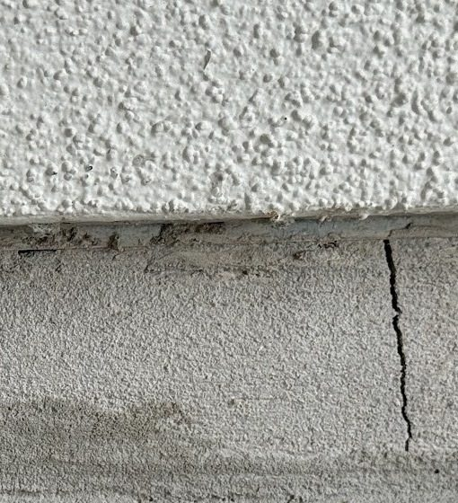
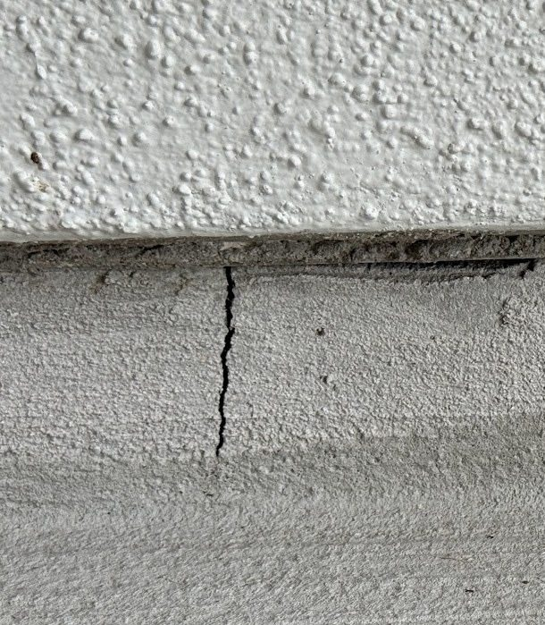
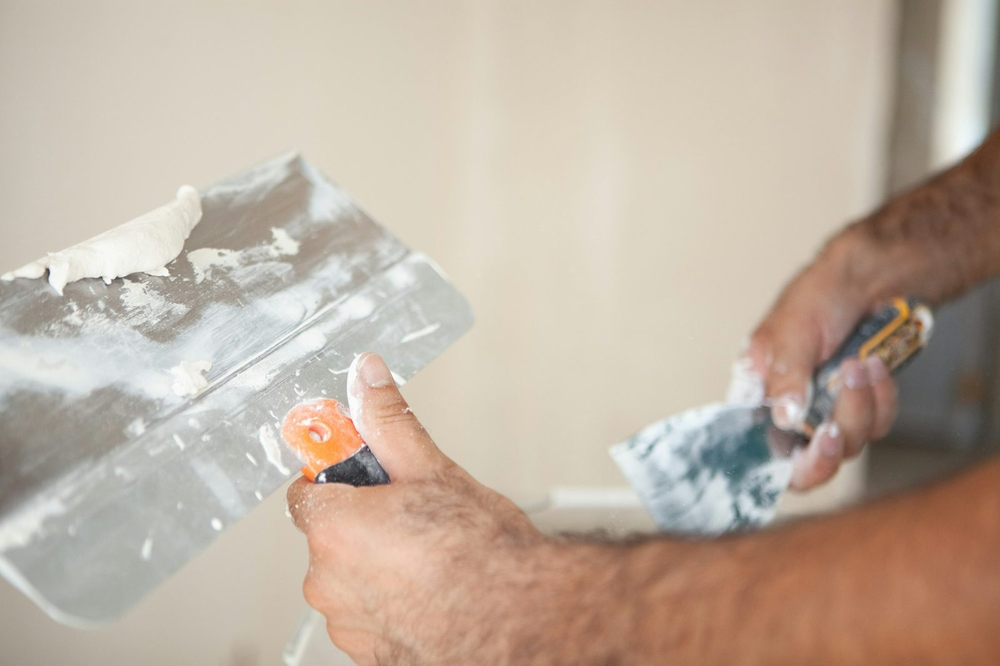
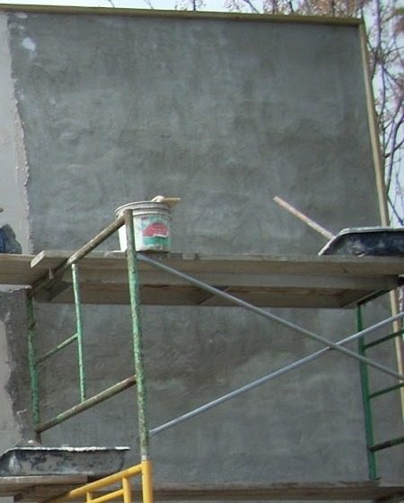
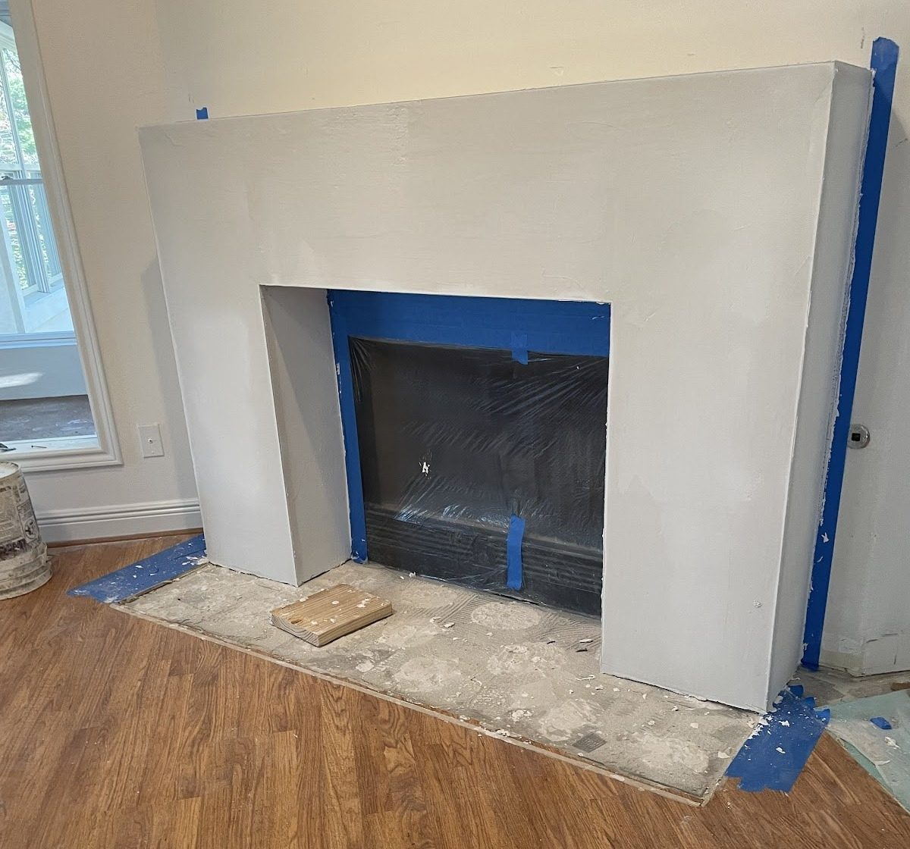
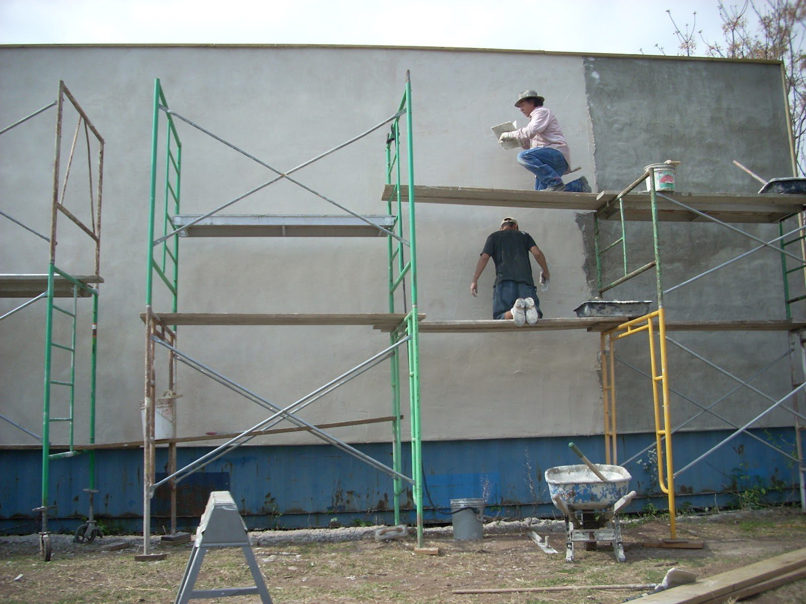
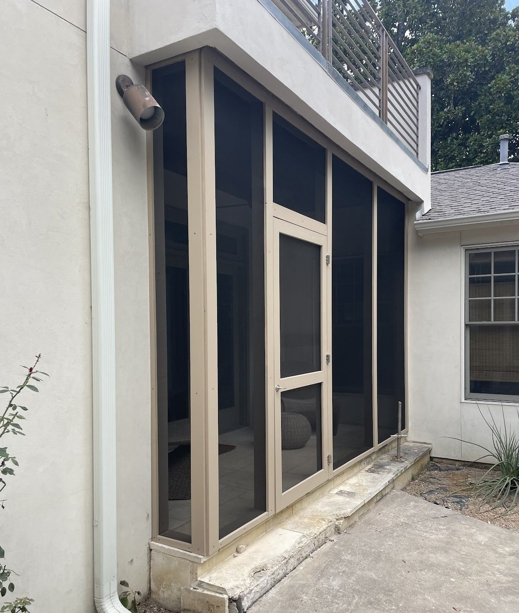
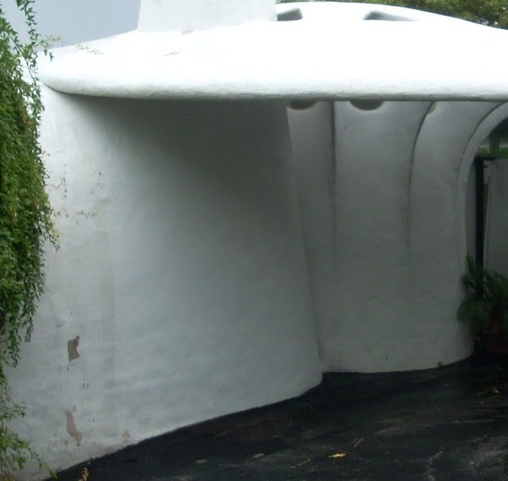
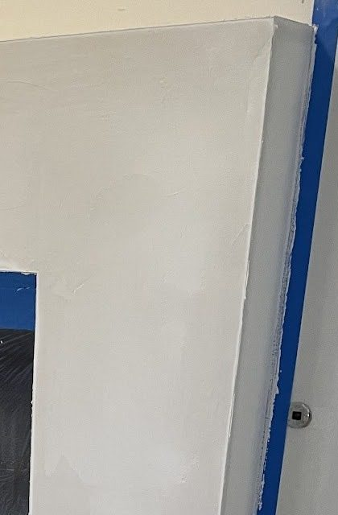

A repair fills cracks and rebuilds damaged patches, then matches the texture so the fix blends into the rest of the wall.
- Cracks at the base and corners
- Damaged or soft patches
- Texture matched to the wall
- Around windows and doors

Plaster & stucco · Austin, TX 78756
Stucco repair, new coats on big walls, interior plaster and soft, curved shapes, worked with a hawk, a trowel and a float. One arc of the wrist at a time.
4.5 on Google
Know your finish
The last coat decides how a wall looks up close. Tap a float to put that finish on the sample board.
A fine, sandy grain left by working the last coat with a float. It hides small waves and touch-ups well, which is why so many stucco walls wear it.

Open a board to see each kind of work, with a photo from one of Dean’s own jobs and a plain line on what it is.
A repair fills cracks and rebuilds damaged patches, then matches the texture so the fix blends into the rest of the wall.

Stucco goes on in coats: a rough base, a brown coat that trues the wall, then the finish coat you actually see.

Plaster inside the house: fireplace surrounds, feature walls and patched rooms, finished smooth or with gentle movement.

Stucco can follow a curve. Rounded walls, curved openings and softened corners are shaped by hand, coat by coat.

Own photo One wall, two coats: finish on the left, brown coat on the right
TX 78756 · Hill Country limestone, hand-floated stucco
Useful · for any stucco wall
Tap the crack that looks like yours.
Crack 1 of 4
Thin cracks are common as stucco cures and the house settles. Mark the ends with a pencil and watch whether they grow.
Keep sprinklers off the walls. Anything wide, growing or damp: call a pro.



Get in touch